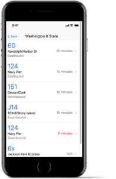

BusyBus

BusyBus is a mobile transportation application designed
to help users navigate over-complicated
transit systems.
Presenting Problem:
The client wanted to enter the cloud application market with an application that also provided user collaboration features.
The Solution:

Discovery Phase:
I conducted a survey with transit app users that provided insight into user preferences. Some key findings:Users appreciate having real time data, a location map, and viewing full schedules Users don’t appreciate unnecessary ads and unreliable notifications.
Information Architecture:
After gathering the initial research, I began working on how to structure of the content of the application. I started by creating users stories:
View morePrototypes:
Combining information from my competitive analysis and my user surveys, I was able to outline what I would like my application to look like.
 View more
View more
Usability Tests:
After creating the initial sketches, I decided to test three users on the flow of the application. The feedback users gave was that the icons on the application could use more clarity,
and that the second screen on the application felt cluttered.
From there, I created a second round of sketches:
High Fidelity Mockups Version 1:
After the feedback from the usability tests, I was able to create high fidelity mockups of my final application.
 View more
View more
High Fidelity Mockups Version 1:
After the feedback from the usability tests, I was able to create high fidelity mockups of my final application.
 View more
View more
Final Design:
With the final design of BusyBus, I decided to incorporate some more feedback I recieved. I created a visual alert (red) for incoming buses. I also adjusted the visual hierarchy of the bus numbers and route names.
View prototypeConclusion:
My final design for BusyBus stuck to my original purpose: to help users find important information in an easy-to-digest way,. The next step I would like to take with this design would be creating a brand identity.
Connect with me:
Thanks for stopping by.
Please reach out if you want to chat or have
any questions!